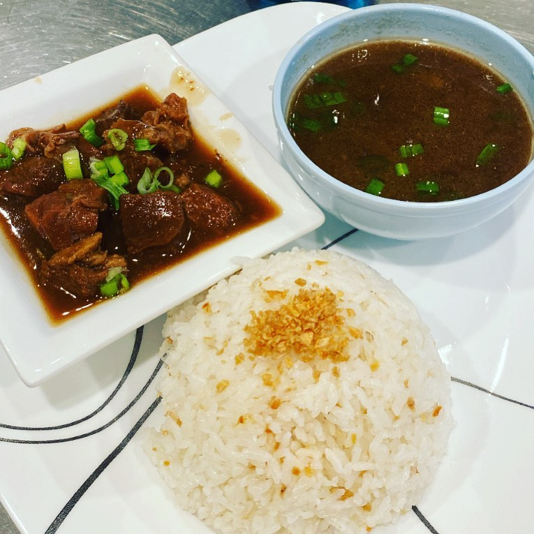

Tatak Pinoy
Pares (with rice)
A sweet-savory beef stew paired with garlic fried rice and clear beef soup.
Ingredients
- Beef brisket
- Garlic & onion
- Soy sauce
- Sugar
- Star anise
- Pepper
- Water/broth
- Cornstarch (optional)
- Cooked rice
- Extra garlic for fried rice
Cooking Procedure
- Sauté garlic and onion.
- Add beef and brown slightly.
- Add soy sauce, sugar, star anise, water.
- Simmer until tender.
- Thicken with cornstarch slurry if desired.
- Make garlic fried rice separately.
- Serve with rice and beef soup.